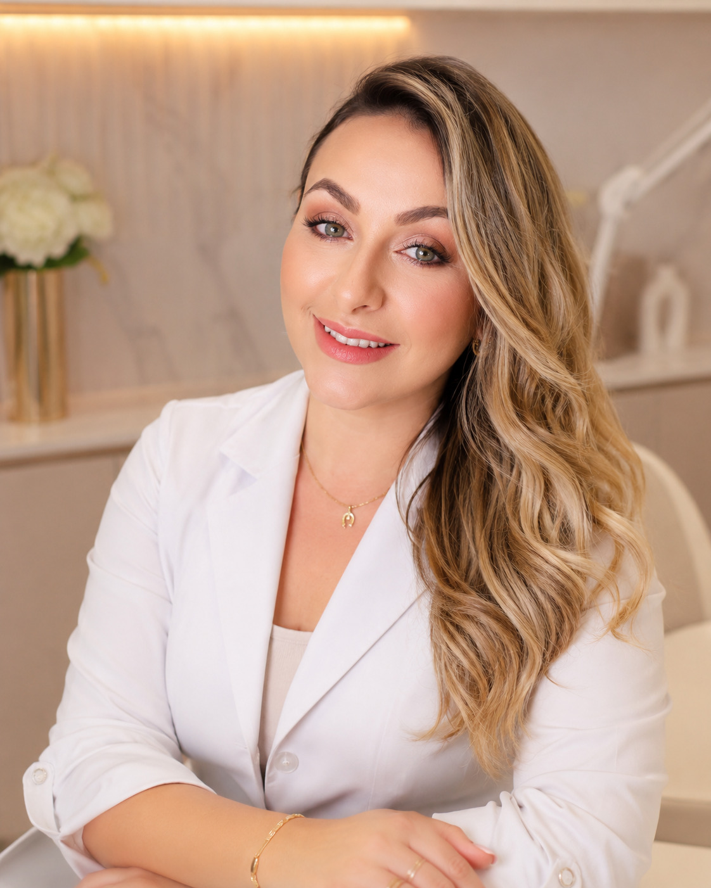
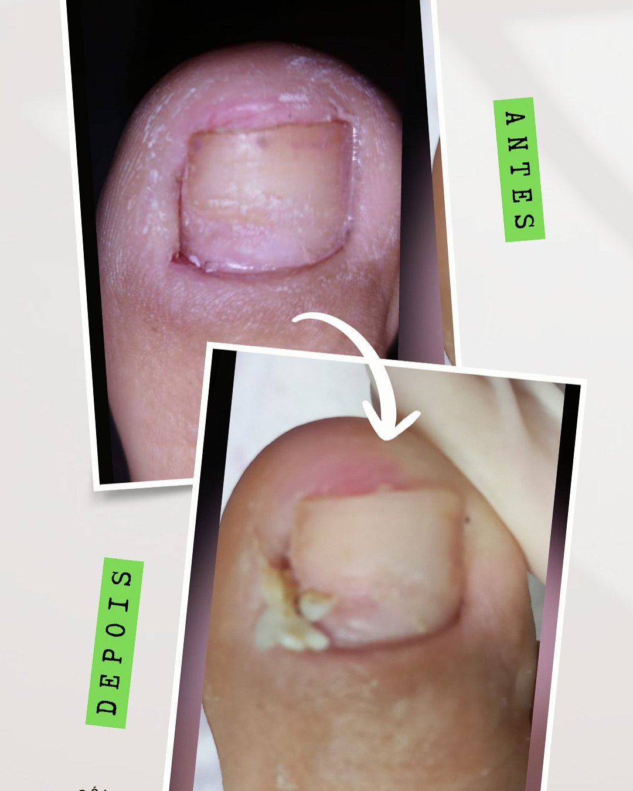
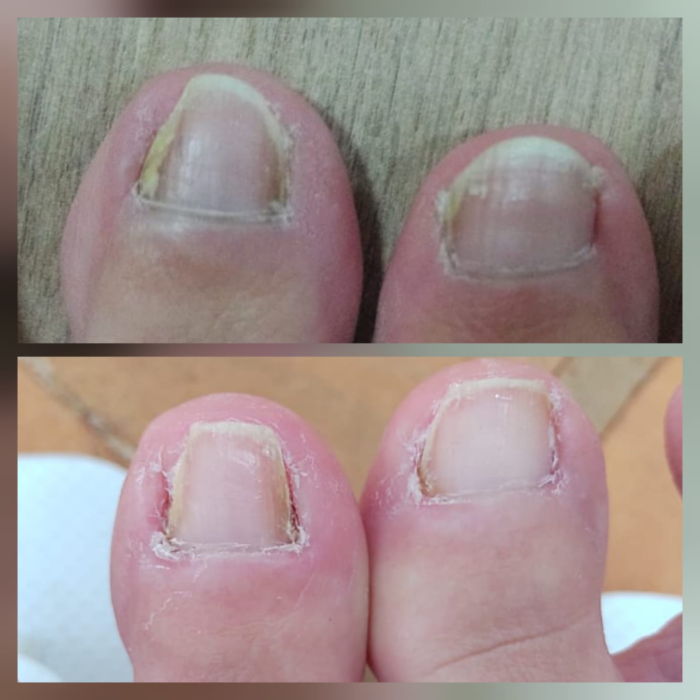
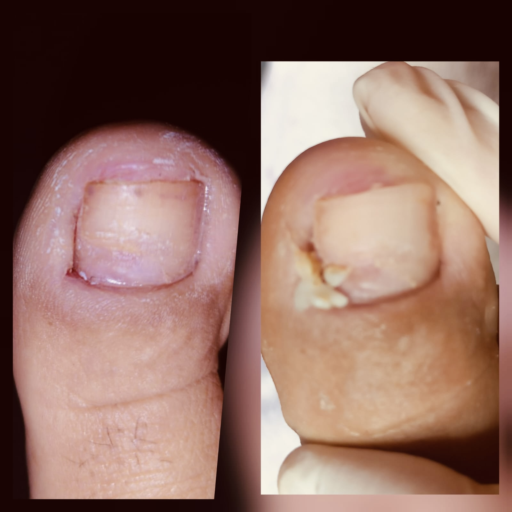
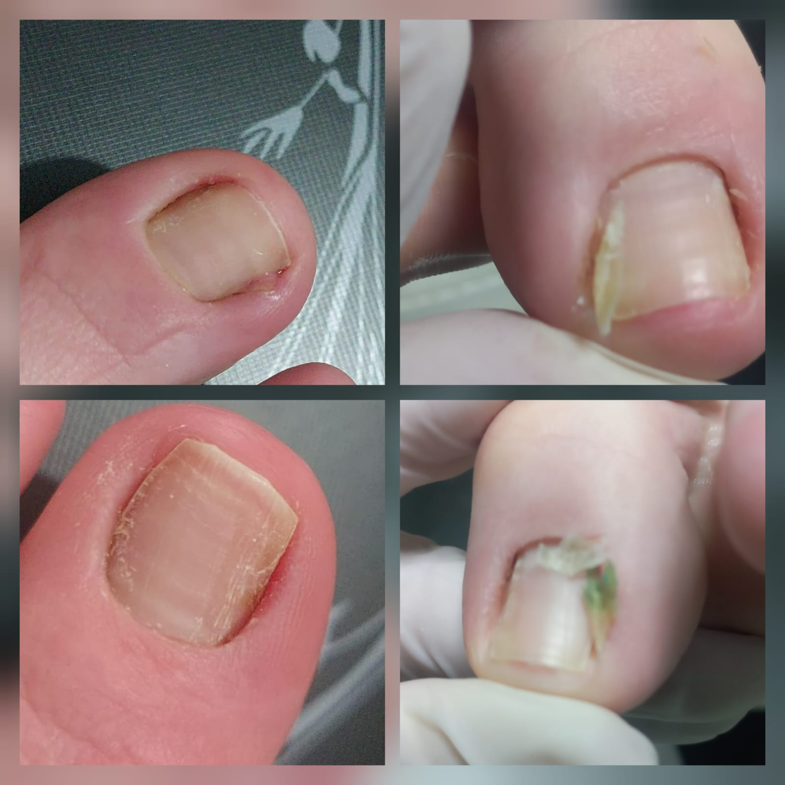

Cuidado profissional em podologia clínica em Avaré, com técnica delicada, materiais esterilizados e atendimento humanizado — para você voltar a caminhar com conforto e segurança.
Sou Ana Carla, podóloga há mais de 10 anos. Atendo mulheres, homens, crianças e idosos com acolhimento, higiene e respeito — sem julgamento e sem brutalidade.
Resposta pelo WhatsApp · Atendimento em Avaré-SP · Sem compromisso
Cheguei com muita dor, ela foi super atenciosa, retirou com carinho e bem devagar pra eu não sentir muita dor. Um ótimo trabalho com essas mãos abençoadas.
Se você se reconhece em algum desses casos, não precisa ter vergonha. Existe cuidado certo, com técnica, higiene e acolhimento.
Aquela dor latejante que te impede de calçar sapato fechado ou caminhar normalmente. Não é um problema de beleza — é um problema clínico que precisa de tratamento especializado em podologia.
Cada passo dói. O sapato fecha e você sente aquele aperto ou ardência. Pode ser calosidade, unha encravada ou outra condição tratável — não precisa conviver com isso.
Unhas amareladas, grossas ou quebradiças que envergonham na hora de tirar o sapato. Existe tratamento — e funciona com o cuidado certo.
Pele endurecida e dolorida na planta ou nas laterais dos pés que dificulta caminhar. Com a técnica certa, a calosidade diminui e o conforto volta.
Fissuras que ardem, pele grossa, pé seco. Faz tempo que você não anda descalça em casa sem desconforto — e existe tratamento para isso.
Você evita sandália, evita praia, evita olhar no espelho. Cuidar dos pés é cuidar de como você se vê e de como você se sente — e aqui não tem julgamento.
Já ouviu histórias ruins ou passou por uma experiência ruim. Aqui, o procedimento é feito com técnica, delicadeza e respeito ao seu limite — em cada etapa.
Seu filho chora, não quer calçar o tênis, está com unha encravada inflamada. Existe podologia infantil com cuidado adaptado para o conforto e a confiança da criança.
Pés que exigem atenção redobrada — com protocolos seguros, olhar clínico e técnica adaptada para cada situação. Saúde em primeiro lugar, sempre.
Procedimentos estéticos agressivos deixaram suas unhas quebradiças, finas ou com dor. Tem recuperação — e começa com o cuidado certo.
"Não é frescura. É saúde. É autoestima. É você se sentindo bem no seu próprio corpo."

Há mais de 10 anos cuido de pés e unhas com um propósito simples: aliviar dores, devolver conforto e fazer cada pessoa se sentir bem cuidada.
Aqui, você não será julgada pelo estado dos seus pés. O atendimento é reservado, delicado e personalizado, com materiais esterilizados e protocolos seguros.
Minha formação clínica me permite ter um olhar mais cuidadoso para casos que exigem atenção redobrada — idosos, diabéticos, crianças e pessoas com dor ou inflamação.
— Ana Carla, sua podóloga em Avaré
Cuidado orientado pelo problema — do clínico ao estético, com a mesma técnica, o mesmo carinho e o mesmo padrão de segurança.
Cuidado técnico para aliviar a dor, tratar a inflamação e orientar a correção — para evitar que o problema volte. Atendimento delicado, sem brutalidade.
Avaliação e tratamento das principais condições que afetam os seus pés, com técnica, segurança e zero brutalidade.
Indicado para unhas que encravam com frequência ou apresentam curvatura acentuada. Solução técnica que devolve forma, função e conforto.
Atendimento cuidadoso, seguro e adaptado para quem precisa de atenção especializada. Protocolos específicos para cada situação, com segurança em primeiro lugar.
Cuidado delicado para crianças com dor, unha encravada ou dificuldade no corte. Atendimento adaptado ao tempo e ao conforto de cada criança.
Cuidado estético sem comprometer a saúde das unhas. Beleza com responsabilidade — sem gel, sem acrílico, sem enfraquecimento.
Casos reais atendidos no consultório, com autorização. Sem filtros, sem exageros — apenas técnica aplicada com responsabilidade.
As imagens abaixo são de casos reais atendidos com autorização e podem conter sinais clínicos. Elas mostram a evolução possível com técnica, cuidado e acompanhamento profissional.

Caso tratado em consultório com técnica de correção e alívio da dor já no primeiro atendimento.

Correção da curvatura com aplicação de órtese, devolvendo conforto e evitando que o problema volte.

Evolução do tratamento com resolução da inflamação e crescimento saudável da unha.

Diferentes condições tratadas com resultado duradouro e orientação para casa.
📸 Mais casos reais no Instagram @ac.estetica.podologa
111 avaliações reais no Google · Avaré-SP
"Quem chega com medo, dor ou vergonha encontra cuidado, técnica e acolhimento."
"Cheguei com muita dor, ela foi super atenciosa, retirou com carinho e bem devagar pra eu não sentir muita dor. Um ótimo trabalho com essas mãos abençoadas, super recomendo."
"Atendimento maravilhoso! Muito atenciosa e cuidadosa. Indicamos sem medo, muito profissional! Com certeza ganhou mais um cliente, obrigada pelo ótimo trabalho."
"Ótimo atendimento! A Ana é muito atenciosa, paciente e cuidadosa. Além de se preocupar com a estética da unha, ela também cuida da saúde da unha. Saio com as unhas lindas e bem cuidadas!"
"Profissional EXCELENTE! Autoestima renovada 100%. Olha esse antes e depois — recomendo de olhos fechados!"
"Excelente profissional, nem senti dor comparado a outros casos que já passei. Recomendo demais!"
"Recomendo!!! Ótimo atendimento, sempre com sorriso no rosto, clareza e atenção. Profissional de confiança."
Simples, rápido e sem surpresas. Você está no comando do seu cuidado em cada etapa.
Me conte o que está sentindo: dor, unha encravada, micose, calosidade ou outro desconforto. Respondo pessoalmente.
Você recebe as informações com clareza antes de vir — endereço, horário e o que precisa saber. Sem surpresa.
Faço uma avaliação cuidadosa e explico o que será feito, sempre respeitando seu ritmo e seu limite.
Além do cuidado no consultório, você recebe orientações para manter a melhora em casa com segurança.
Aqui estão as perguntas que mais escuto no consultório. Se a sua não estiver aqui, é só me chamar no WhatsApp.
R. Álvaro Lemos Tôrres, 665
Parque Res. Brabância I — Avaré-SP
CEP: 18703-060
Segunda a Sexta: 08h às 18h
Sábado: 08h às 13h
Domingo: fechado
Não deixe a dor, a vergonha ou o cansaço atrapalharem mais um dia. Mande mensagem agora — eu respondo pessoalmente e a gente já encontra o melhor horário para você.
Quero agendar meu horário com a Ana CarlaPode chamar sem vergonha. O atendimento é reservado, delicado e sem julgamento.